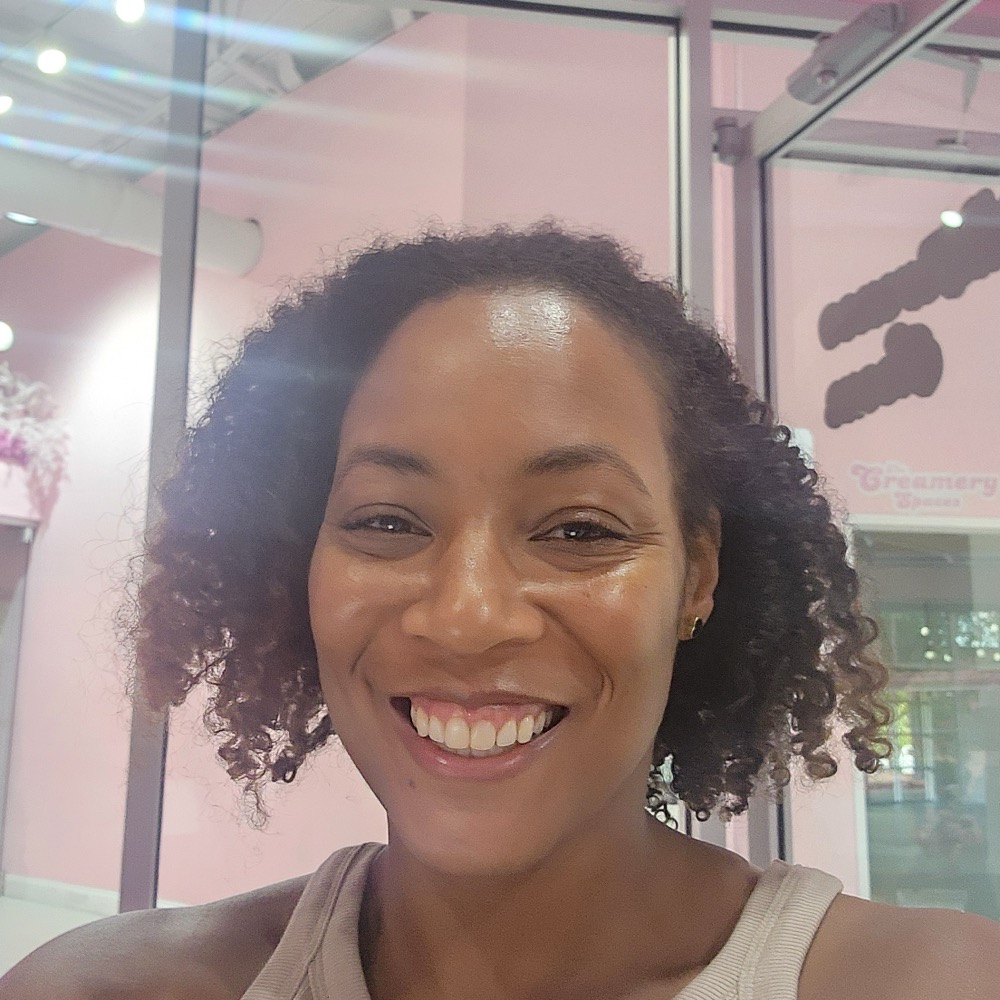
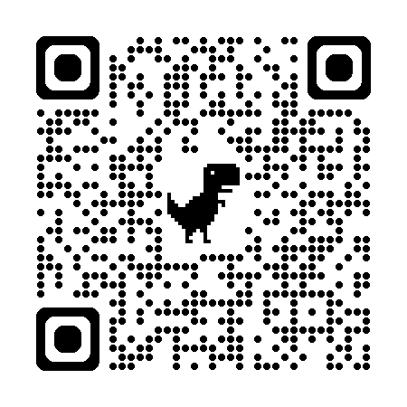

Building with AI for small business. Not the prompts. The machine that runs the back office while you sleep.
Most people have used AI to write a caption, an email, a post. Far fewer have an AI tool that actually ran a part of their business for them, while they slept.
That gap is the whole reason for tonight.
Multimillion-dollar budgets. Teams across five continents. Then a course teaching software engineers how AI systems actually work, the real machinery behind the tools. Now that same infrastructure, built for small businesses.

Cynthia Jones · FounderMost AI talk is about the front of your business. More followers. More leads. More customers at the door.
My work starts the moment they walk through it.
"She fills the top of the funnel. I build the machine that keeps the bottom from leaking."
More customers without a system underneath isn't growth.
It's just a bigger fire.
Not demos. Not mockups. Systems running right now for a Georgia bakery and a wellness coach.
Orders in her DMs. Capacity in her head. Turning away business she couldn't track.
Everything ran on her phone and her memory.
These aren't apps they rented. They were built for the specific business, the owner owns them, and they're designed to run without her touching every piece.
Custom software used to cost fifty thousand dollars and a development team. AI is what makes building this for a small business affordable now. That's the real headline. You can finally own infrastructure that used to be only for big companies.
You don't need all of it at once.
It starts with one question:
where is your business breaking?
We find that first. Then we build the one thing that fixes it.
A few of us, building one real system together over a few weeks. Not a lecture. A build.
If that sounds useful, find me after and tell me. I'm listening for whether there's appetite for it.
A free 45-minute discovery call. We sit down, I help you see where the gaps are. No pitch.
The code books it. Grab a slot tonight.
cynthia@thebuildersopsstudio.com

Cynthia Jones · The Builders' Ops Studio. Thank you.